Five days across Kuala Lumpur, Putrajaya, Cyberjaya, and Genting Highlands — moving between government institutions, universities, industry briefings, and cultural landmarks as part of JNN's International Immersion Programme 2026.
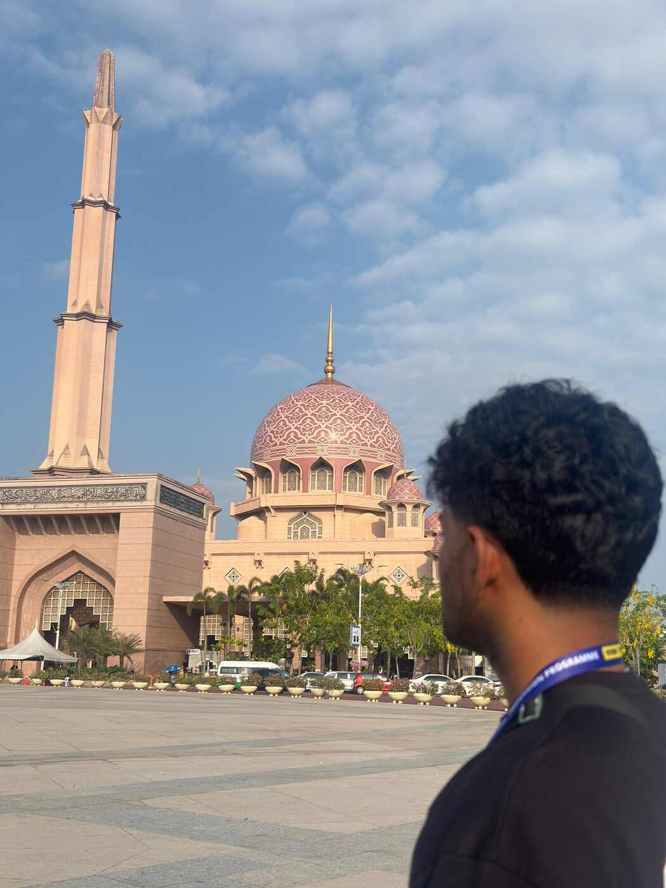
The programme opened in Putrajaya, Malaysia's purpose-built federal administrative capital. Walking through the planned boulevards past the pink-domed Putra Mosque and the Perdana Putra, it was a first look at how a nation designs a city around its institutions of government — a fitting start to an immersion built around government and industry exposure.
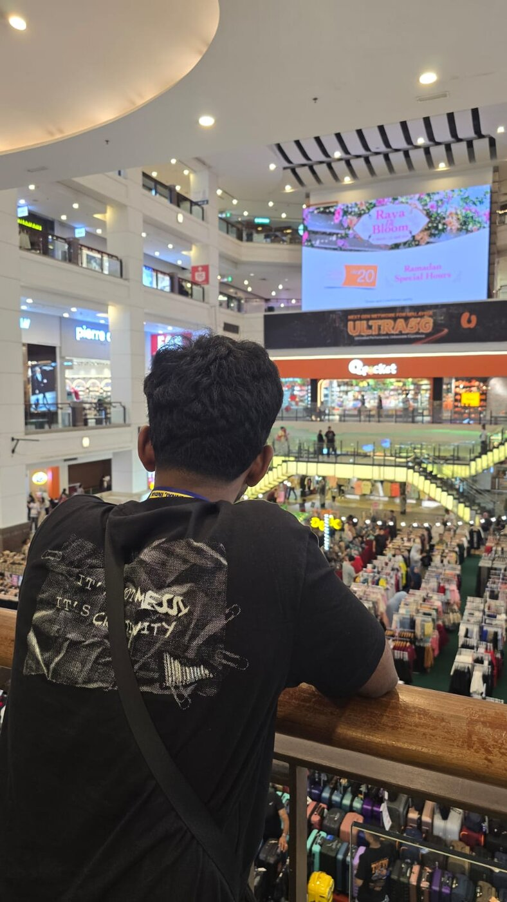
The afternoon shifted gears to Berjaya Times Square — one of Kuala Lumpur's largest retail and entertainment complexes. Between the indoor theme park and the dense run of retail floors, it was a quick, energetic read on everyday urban life and consumer culture in the city, before the programme moved into its more formal briefings.
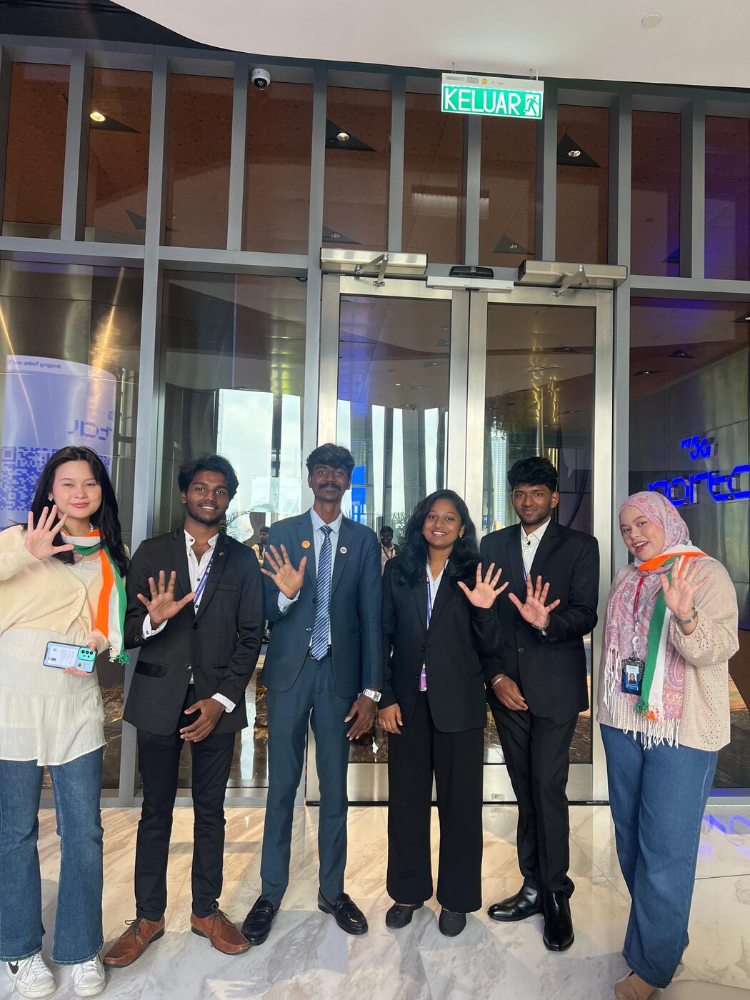
Day two began at Tun Razak Exchange, Kuala Lumpur's newest financial district, for a session at the My Portal 5G exhibit. It was a direct look at how Malaysia is rolling out national 5G infrastructure — a useful counterpoint for a group of engineering students used to talking about networks only in theory.
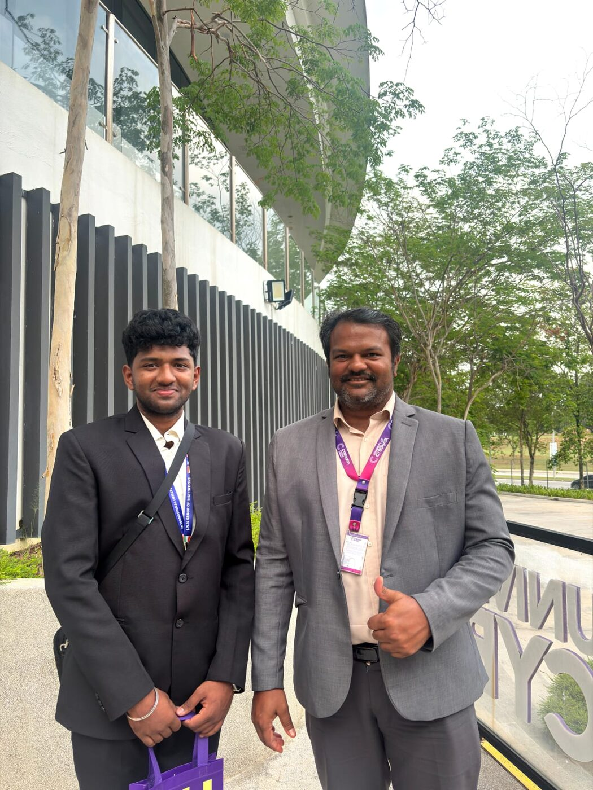
From there, the group moved to Cyberjaya for a hands-on Power BI workshop at the University of Cyberjaya. The session walked through building dashboards and reading data stories from raw numbers — a practical skill that travelled straight back into every team member's own project work.
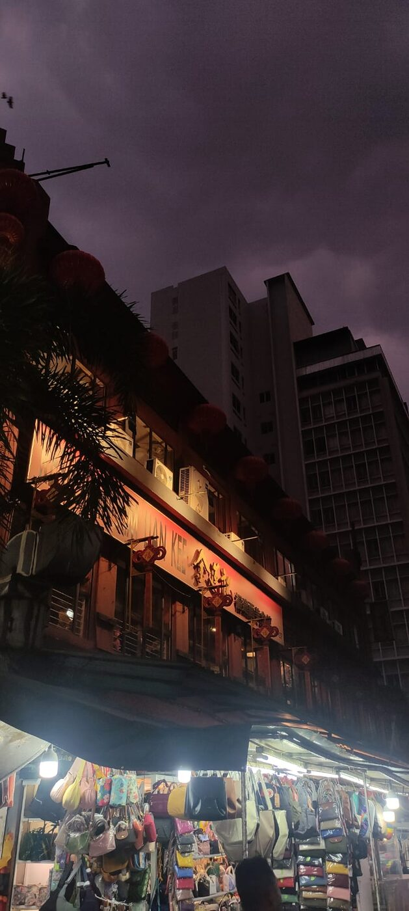
The day closed in Kuala Lumpur's Chinatown along Petaling Street — red lanterns overhead, stalls lit up on either side, and the kind of after-dark energy that's hard to plan for and easy to remember. A good reset before two more formal days of institutional visits.
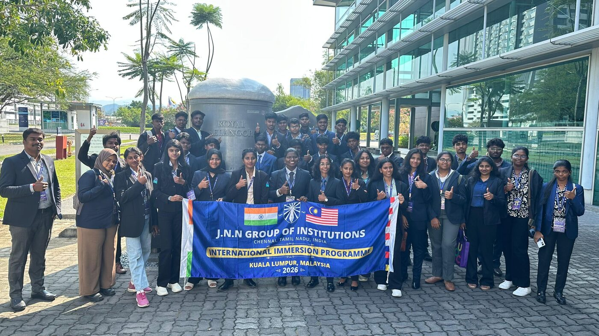
The third day opened at the Royal Selangor Pewter Museum, home to the world's largest pewter tankard, for a guided walk through Malaysia's pewter-crafting heritage — from raw tin to finished tableware. The full cohort posed for the day's group photo beside the giant tankard before heading into the city's financial and policy institutions.
At Bank Negara Malaysia, the country's central bank, the visit moved from observation to participation — including a turn at the podium addressing the group. It was a brief but pointed exposure to how monetary policy and financial institutions shape a country's economy from the inside.
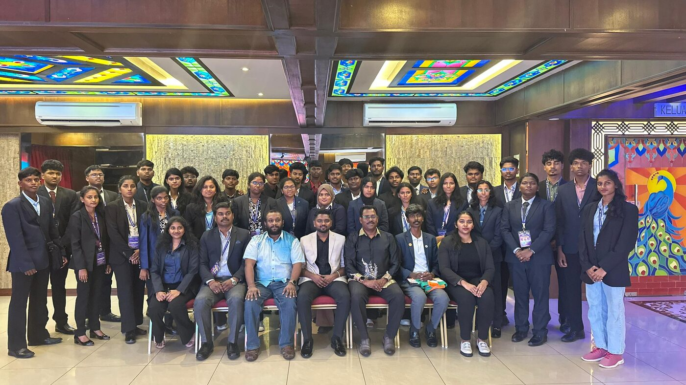
The group sat down for a formal lunch with senior officials from Malaysia's education ministry — a chance to hear directly about how the country approaches higher education policy, and to compare notes on what an "international immersion programme" looks like from the host side of the table.
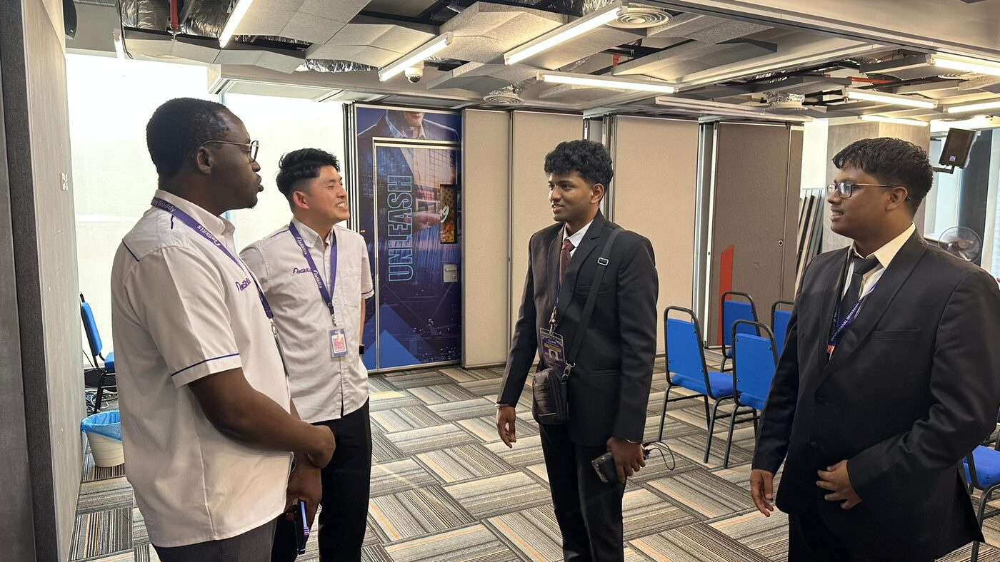
The day closed at the Re-Skills Centre, talking through how Malaysia is structuring large-scale workforce upskilling programmes for a fast-changing job market — a theme that echoed through several of the week's other stops, from 5G infrastructure to data workshops.
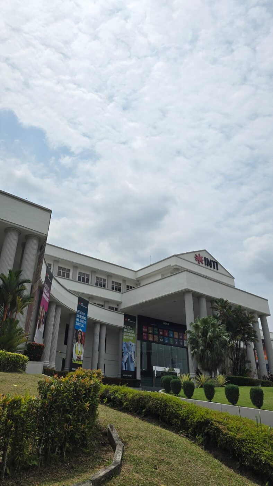
The fourth day began with a tour of INTI International University's campus, walking through its faculties of engineering, quantity surveying, and data science & information technology — a look at how a Malaysian private university structures its programmes alongside industry needs.
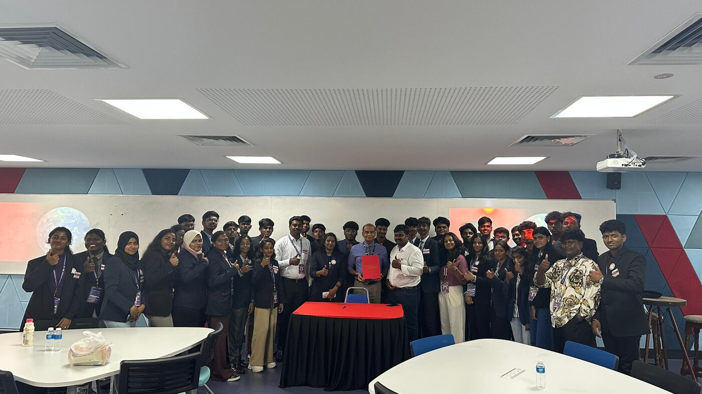
The campus visit closed with a formal Memorandum of Understanding signed between JNN Group of Institutions and INTI University — a step toward a longer-term academic partnership between the two institutions, marked here with the whole delegation in the room.
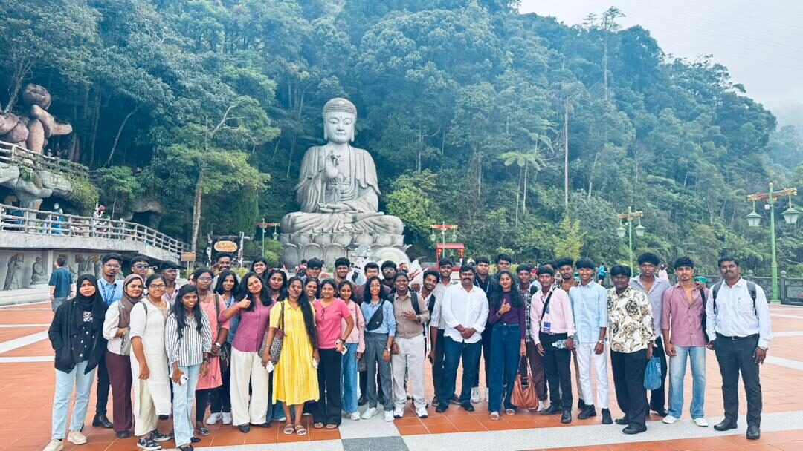
From campus to the hills — the cohort headed up to Genting Highlands, pausing at the giant Buddha statue at the base of the limestone cliffs for a full-group photo, with the cool highland mist standing in stark contrast to Kuala Lumpur's heat just an hour below.
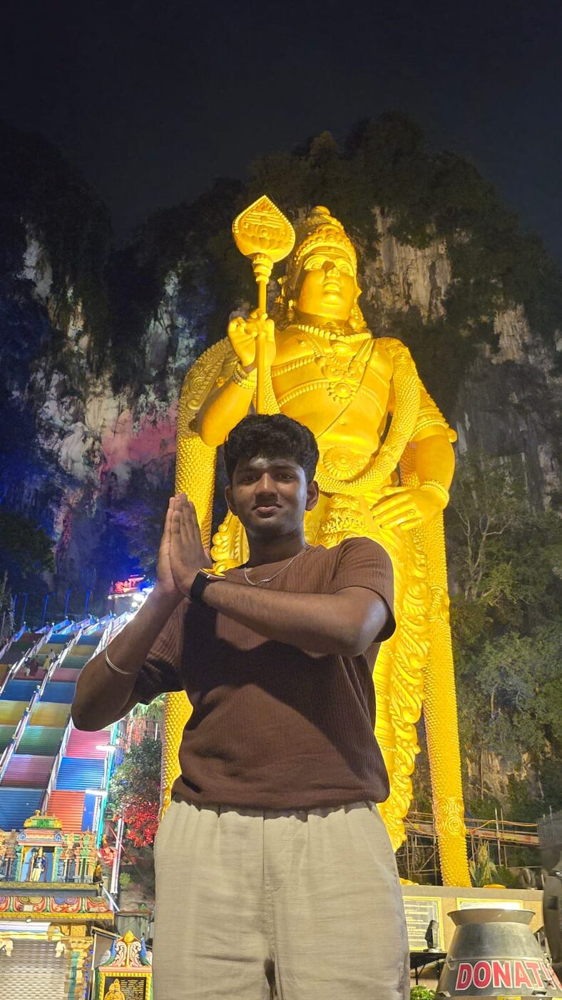
The day ended at Batu Caves after dark, beneath the towering golden statue of Lord Murugan lit up against the limestone cliff face — one of the most recognisable landmarks in Malaysia, and a quietly reflective close to a packed day of campus visits and hill roads.
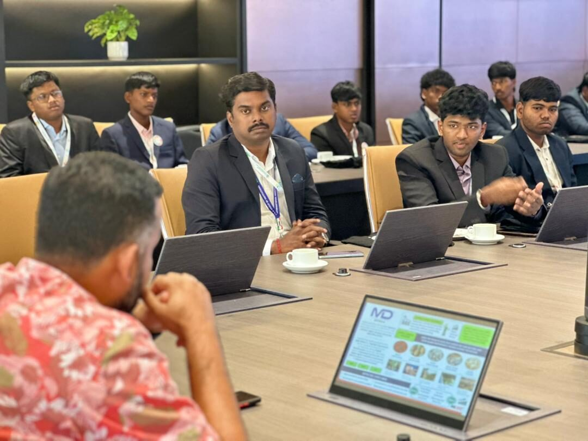
The final day opened at the Malaysia Digital Economy Corporation, in a boardroom session on how the country is steering its digital economy — from start-up ecosystems to national tech talent pipelines. A fitting venue for the last full day of an immersion built around technology and policy.
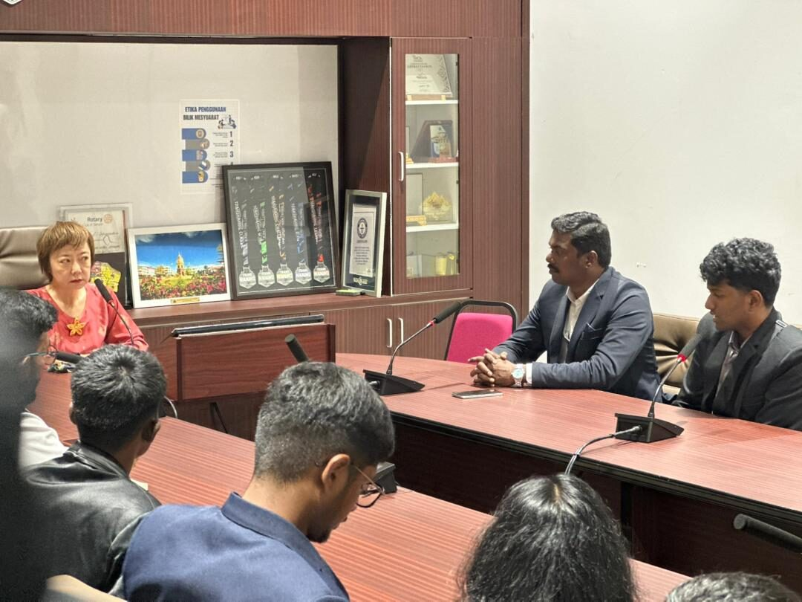
A formal courtesy visit followed with the State Tourism Minister of Negeri Sembilan, discussing tourism, education exchange, and what continued collaboration between the state and visiting institutions like JNN could look like going forward.
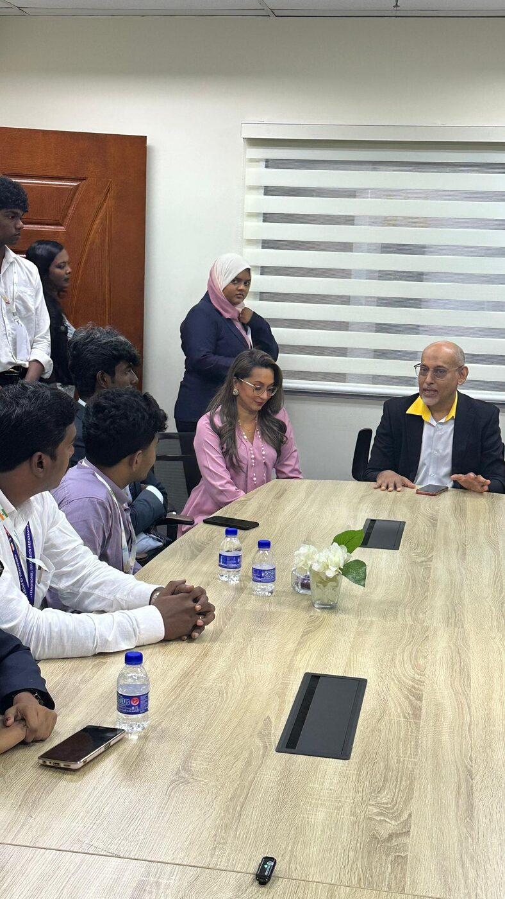
The programme continued with a roundtable at FMBA, sitting down with industry representatives for a closer, smaller-group conversation — a contrast to the larger institutional briefings earlier in the week, and a good chance to ask more direct questions.
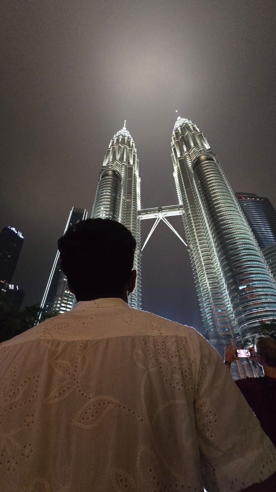
Five days closed the way Kuala Lumpur is best known — standing beneath the Petronas Twin Towers lit up against the night sky. A fitting full stop on a programme that moved through government offices, universities, industry boardrooms, and a fair share of Malaysia's most iconic skyline along the way.
The JNN International Immersion Programme 2026 covered a lot of ground — literally and otherwise. From Putrajaya's government quarter to Genting's hill temples, the week stitched together formal institutional briefings with the kind of on-the-ground cultural exposure that's hard to get any other way.
← Back to portfolio